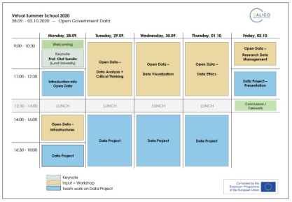
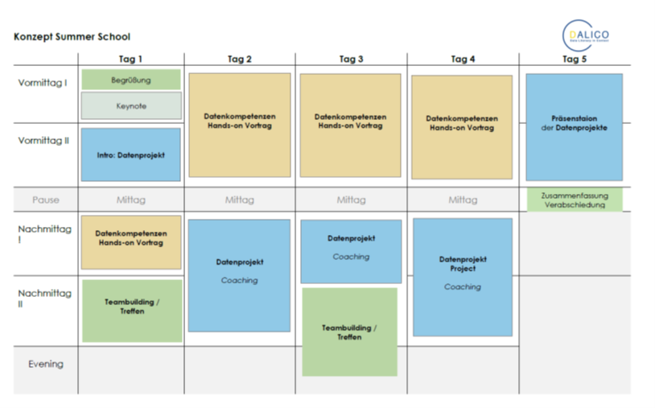

DaLiCo Summer School
Toolbeschreibung
Das Format der Summer School bietet besondere Rahmenbedingungen, die eine vertiefte und intensive Beschäftigung mit einer Thematik ermöglichen, da es sich von vornherein um zeitlich begrenzte Angebote im Blockformat handelt.
Die Erkenntnisse und Erfahrungen zu erfolgreichen Formaten der Förderung von Datenkompetenz, die auf der Ridsdale-Matrix aufbauen (Ridsdale et al., 2015: 19 ff.), zeigen bereits auf, wie wichtig das anwendungsorientierte, projekthafte und selbstständige Lernen mit echten Daten für Studierende ist. Die DaLiCo-Summer-Schools wurden basierend auf diesen Ergebnissen entwickelt und sind darüber hinaus inspiriert durch die erfolgreichen Workshops der Carpentry-Bewegung, dabei werden digitale Fertigkeiten vor allem mithilfe aufgabenbasierter praktischer Übungen vermittelt.
Der konzeptionelle Ansatz ist fachübergreifend und generisch im Sinne digitaler Schlüsselkompetenzen. In diesem Zusammenhang wird auf ganzheitliche Bezüge Wert gelegt, um Verbindungen zwischen Teilkompetenzthemen deutlich zu machen, die zum Datenlebenszyklus gehören, oder auch um übergeordnete konzeptionelle Themen wie Datenethik explizit zu integrieren.
Voraussetzungen & Zielgruppen
Zur Zielgruppe der DaLiCo-Summer-Schools gehörten fortgeschrittene Studierende wie Masterstudierende und Promovierende aus unterschiedlichen fachlichen Disziplinen. Die Summer Schools waren international ausgerichtet und brachten daher Teilnehmende aus vielen verschiedenen Ländern zusammen. Die Erfahrungen im Hinblick auf den Umgang mit Daten wurden im Vorfeld bei der Anmeldung mittels eines Fragebogens abgefragt. Die Studierenden arbeiteten kollaborativ in Teams. Die Teams wurden bewusst so zusammengesetzt, dass die Mitglieder unterschiedliche Vorkenntnisse und Erfahrungen im Umgang mit Daten mitbrachten. Diese gemischten Teams haben sich als unterstützend erwiesen und dazu beigetragen, dass die einzelnen Teammitglieder die intensive Lernerfahrung in den fünf Tage dauernden Summer Schools als sehr positiv wahrgenommen haben (Ameis et al., 2021).
Kompetenzen
Im Hinblick auf die zu vermittelnden Kompetenzen wird der breite ganzheitliche Ansatz der Datenkompetenz nach Ridsdale et al. (2015) zugrunde gelegt. Die für die Summer School ausgewählten Kompetenzbereiche orientieren sich am Datenlebenszyklus und beginnen mit der Forschungsfrage und –planung, reichen über den Zugang beziehungsweise die Erhebung der Daten, die Aufbereitung und Analyse, die Kommunikation und Publikation bis hin zur Archivierung und Nachnutzung. Die Umsetzungserfahrungen mit den Summer Schools bestätigen, dass die jeweils sinnvoll zu vermittelten Kompetenzprofile je nach Kontext der Hochschule, der Disziplin und der Ausgangssituation in den Studiengängen flexibel zu wählen sind1.
Über die reine Vermittlung von Datenkompetenzen hinaus bieten die Summer Schools auch die Möglichkeit der Förderung der Methoden-, Sozial- und Selbstkompetenz (HQR), da die eigenverantwortliche Projektarbeit in Teams ein wesentliches Element der Summer Schools ist.
Die Lernziele entsprechend der Lernzielmatrix nach Anderson & Krathwohl (2001) gehen über das „Anwenden“ hinaus zum „Bewerten“ und „Kreieren“. Die praktische Umsetzung steht in den Hands-on-Anteilen und auch im Zusammenhang mit den Datenprojekten im Vordergrund. Hier geht es für die Studierenden darum zu lernen, wie sie eigene Zugänge und Fragestellungen entwickeln und umsetzen können.
Lerninhalte & Methoden
Die Summer Schools wurden innerhalb einer Woche an fünf aufeinander folgenden Tagen umgesetzt, der Aufbau innerhalb der Woche und im Tagesverlauf wurde an Themen (Datenlebenszyklus) und Aktivitäten (Input und praktische Projektarbeit) orientiert. Im Folgenden wird dies beispielhaft am Wochenplan der ersten Summer School (2020) illustriert (siehe Abbildung 1).

Basierend auf den Erfahrungen und Entwicklungen der DaLiCo-Summer-School-Konzepte werden ein prototypisches Programm und ein Zeitplan (siehe Abbildung 2) vorgeschlagen. Das Programm enthält erprobte Komponenten unterschiedlicher Inhalte und Formate:
- Organisatorischer und sozialer Teil (grün)
- Datenprojekte (blau)
- Datenkompetenzthemen (braun)
- Keynote (grau)

Leitideen des Summer-School-Konzepts:
Inspirierende Fachvorträge
Für jede Summer School wurden Personen mit besonderer Expertise , entweder auf dem Gebiet der Datenkompetenz oder in einem Fachgebiet, eingeladen, die in Form von kurzen Impulsvorträgen über konkrete Forschungs- oder Praxisprojekte und methodische Innovationen berichtet haben. Auf diese Weise wurde sichergestellt, dass den Teilnehmenden deutlich wurde, wie die erlernten Kompetenzen im Umgang mit Daten in der Berufspraxis eingesetzt werden.Flexible Kompetenzportfolios und Kontextualisierung
Die adressierten Datenkompetenzen wurden bei den Summer Schools bewusst mit unterschiedlichen thematischen und inhaltlichen Schwerpunkten variiert: Dazu zählten Aspekte der Openness und Integration ethischer Fragen am Beispiel des World Happiness Report bei der Summer School I - Open Government Data / 2020 (siehe Abbildung 1) –, disziplinspezifische Bedarfe und Integration von KI-Themen im Gesundheitsbereich bei der Summer School II - Advancing digital and data skills in the health sector / 2021 – sowie allgemeine Aspekte zu Open Science und Datenmanagement auch von großen Datensätzen bei der Summer School III - Exploring Research Data Management / 2022.Praxis und Diskurs
Die Teilnehmenden erarbeiteten in Teams ein eigenes Datenprojekt, das von der Recherche nach Daten und Datensätzen über die Analyse bis hin zur Präsentation und Visualisierung der Ergebnisse sowie der Sicherung der Daten und Datenprodukte für eine spätere Nachnutzung führte. Dabei wurde ganz praktisch mit den realen Daten gearbeitet. Die Ergebnisse wurden auf einer gemeinsamen Projektplattform (https://projects.dalico.info/) veröffentlicht. Das Programm der Summer School war so angelegt, dass sowohl die konkrete Erfahrung im Umgang mit Daten ermöglicht wurde als auch inhaltliche Impulse gesetzt wurden, die auf der Grundlage der Ergebnisse die Diskussion der Forschungsfragen, methodische Reflexion und kritisches Denken der Teilnehmenden anregten. Dies gelang durch eine Vielfalt an didaktischen Formaten wie Keynotes, Vorträgen zu einzelnen Datenthemen, Hands-on-Workshops und Projektarbeit. Ethische Fragestellungen ergaben sich aus den Forschungsfragen und -themen und wurden auch unmittelbar im Prozess der Datenanalyse mitberücksichtigt.Guided Learning
Im Umgang mit den Datenprojekten wurde das didaktische Konzept des „Guided Learning“ durch die Bereitstellung von Musterlösungen für einzelne Bearbeitungsschritte beispielsweise der Datenanalyse und die Begleitung durch Coaches erprobt. Diese Lehrform ermöglichte den Lernenden ein hohes Maß an Selbstständigkeit und sicherte gleichzeitig Begleitung und Ad-hoc-Unterstützung ab.
Erkenntnisse & Erfahrungen
Konkrete Learnings lassen sich auf verschiedene Aspekte beziehen:
Didaktik
Das Programm der Summer School ist nicht von Inputs und Vorträgen geprägt, sondern von Workshops für Hands-on-Erfahrung. Der Einstieg in die Teamarbeit am Datenprojekt muss sorgfältig moderiert werden, da die unmittelbare soziale Interaktion in der digitalen Umgebung begrenzt ist. Auch das Coaching der Studierenden durch die Projektpartner muss transparent und verbindlich organisiert werden. Wichtige Erkenntnisse aus der Summer School waren, einen stärker partizipativen Ansatz zu verfolgen und offen für die jeweiligen Bedürfnisse der Teilnehmenden zu sein, unterschiedliche Sichtweisen zu integrieren und genügend Zeit für Interaktivität zu lassen sowie Diskussionen anzuregen.Generischer Ansatz
Die Erfahrungen und Ergebnisse der zweiten Summer School (Fachkontext Gesundheit) haben gezeigt, dass neben den fachspezifischen Datenaspekten auch übergreifende Datenkompetenzen (wie Datenzugang, Datenmanagement, Datenkommunikation) für die Teilnehmenden relevant sind.Technik
Die Klärung der technischen Voraussetzungen im Hinblick auf Auswahl und Qualität der technischen Systeme (Videokonferenzsysteme, Lernplattformen und kollaborative Tools) ist besonders relevant auch im Hinblick auf die Klärung des Formats in Präsenz oder virtueller Form.Organisation
Die Umsetzung im digitalen Szenario bedarf sehr genauer Vorbereitung. Hier müssen sowohl für die Lehrenden als auch für die Studierenden die organisatorischen und technischen Voraussetzungen für die einzelnen Sessions im Vorfeld genauestens beschrieben werden, um die aktive Teilnahme zu gewährleisten. Dazu gehören Fragen wie Webzugang, Log-ins für Lernplattformen, Software, Zugang und Speicher für Dateien, Hardware oder auch die Netiquette zum digitalen Umgang in den Konferenzsystemen. Die Umsetzung der praktischen und sozialen Anteile der Summer School in die digitale Form stellt jedoch eine Herausforderung dar (Gläser & Spree, 2022).
Tipps aus dem Summer-School-Konzept
Wahl des Themas, das für die Teilnehmenden relevant und motivierend sein sollte. Wie wichtig die Wahl der verschiedenen Kontexte für die drei Summer Schools dahingehend war, wurde in der Evaluation deutlich. Der World Happiness Report für die erste Summer School erwies sich als ein emotionales und motivierendes Thema. Bei der zweiten Sommerschule brachten die Teilnehmenden ihre eigenen Forschungsthemen aus dem Gesundheitsbereich ein, was eng mit persönlichen Lernzielen verbunden war. Diese Motivation galt auch für die dritte Summer School, bei der die Studierenden ebenfalls an ihre persönliche Forschung anknüpften, zum Beispiel als Thema für ihre Dissertation, allerdings mit einem stärkeren Fokus auf methodologische Fragen.
Die Auswahl der zu behandelnden Kompetenzen sollte eine ganzheitliche Datenerfahrung ermöglichen. In allen drei Datenprojekten wurde darauf geachtet, die Prozesselemente des Datenlebenszyklus vom Zugang zu den Daten bis zur Kommunikation der Datenprodukte zu berücksichtigen.
Die Formulierung geeigneter Forschungsfragen ist ein Schlüsselfaktor für erfolgreiche Datenprojekte. Dies begleitete die Arbeit in den Datenprojekten. Besonderes Augenmerk wurde im Rahmen des Coachings durch die Lehrkräfte auf die Forschungsfrage gelegt.
Der didaktische Ansatz des „Guided Learning“ und die Übergabe der Verantwortung für den Lernprozess an erfahrenere Lernende erwiesen sich bei den gemischten Teams als erfolgreich. Erfahrenere Studierende halfen anderen mit weniger Wissen, die Arbeitsatmosphäre in den Teams war positiv. Die Strategie des Lernens anhand von Beispielen (mithilfe von Vorlagen, zum Beispiel im Zusammenhang mit der Datenanalyse) unterstützte die gemischten Teams. Auch die Kombination aus selbstgesteuerten Projekten und Coaching erwies sich als positiv für die Lernerfahrung.
Das Interesse der Studierenden an ethischen Aspekten der Arbeit mit Daten erwies sich als groß. Impulse zum kritischen Denken und zu ethischen Fragen flankierten die vermittelten Kompetenzthemen und praktischen Datenprojekte. Diese Verbindung erwies sich für die Teilnehmenden als besonders relevant, da die jeweiligen Auswirkungen der Datennutzung für die Teilnehmenden deutlich und nachvollziehbar wurden.
Virtuelle Umgebungen zur Erleichterung des Inputs und der praktischen Sitzungen sollten gut geplant und für die verschiedenen Zwecke konzipiert sein. Ein Learning Management System (LMS) wie Moodle bietet eine zentrale Plattform, erwies sich aber als zu wenig flexibel in Bezug auf die Interaktivität. MS Teams als zentrale Plattform bot zwar Interaktivität, aber wenig strukturierte Ablagemöglichkeiten für die Projektergebnisse. Aus diesen Erfahrungen mit verschiedenen Systemen wurde die Forderung nach einer stärker integrierten Umsetzung abgeleitet. Die Plattform sollte synchrone Schulungen, organisatorische Informationen, Interaktivität und Kommunikation sowie eine Dateiablage ermöglichen. Diese Aspekte sind vor allem für virtuelle und hybride Settings relevant.
Hilfreiche Links
- Data Literacy in Context – DaLiCo: https://dalico.info
- DaLiCo-Summer-Schools: https://dalico.info/summer-schools/
- Data Carpentry: Building Communities Teaching Universal Data Literacy: https://datacarpentry.org/
- HQR – Qualifikationsrahmen für deutsche Hochschulabschlüsse: https://www.hrk.de/fileadmin/redaktion/hrk/02-Dokumente/02-03-Studium/02-03-02-Qualifikationsrahmen/2017_Qualifikationsrahmen_HQR.pdf
- Lernzieltaxonomie nach Anderson & Krathwohl; https://dbs-lin.ruhr-uni-bochum.de/lehreladen/planung-durchfuehrung-kompetenzorientierter-lehre/kompetenz-pruefen/lernzieltaxonomien/
- World Happiness Report 2018: https://worldhappiness.report/ed/2018/
Autor:innenprofil
Prof. Christine Gläser, unter Mitarbeit von Prof. Dr. Ulrike Spree und Kristin Ameis (HAW Hamburg).
Literatur
So wurden im Rahmen der drei DaLiCo-Summer-Schools unterschiedliche Schwerpunkte erprobt, in der ersten Summer School mittels Themen der Datenanalyse und Datenethik, in der zweiten mit KI-Methoden und in der dritten mittels Themen des Datenzugangs und Datenmanagements.↩︎